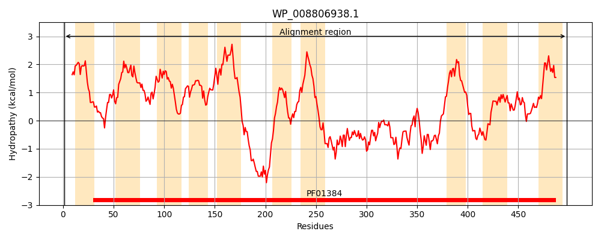
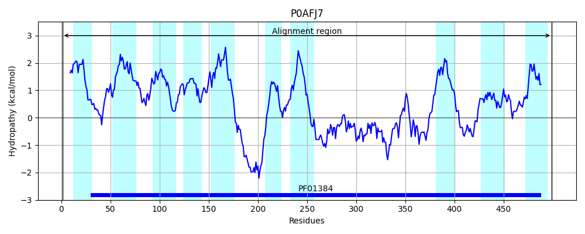
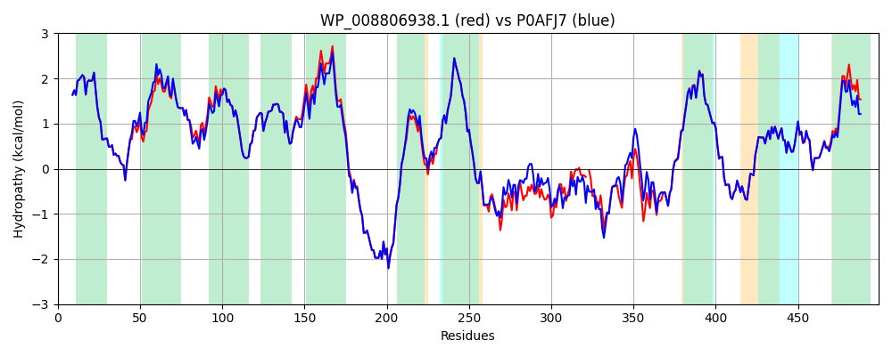

Hit Accession: P0AFJ7
Hit TCID: 2.A.20.1.1
Hit Description: gnl|BL_ORD_ID|8826 gnl|TC-DB|P0AFJ7|2.A.20.1.1 Low-affinity inorganic phosphate transporter 1 - Escherichia coli.
Mach Len: 499
e:0.000000
Query TMS Count : 10
Hit TMS Count: 10
TMS-Overlap Score: 10.500000
Predicted Substrates:CHEBI:5584;hydron, CHEBI:7793;phosphate(3-), CHEBI:30477;tellurite
BLAST Alignment:
Score: 2267 , Bit scores: 877 bits, E-value: 0.0e+00, Alignment length: 499, Percentage identity: 89
Query: 1 MLHLFAGLDLHTGLLLLLALAFVLFYEAINGFHDTANAVATVIYTRAMRSQLAVAMAALFNFFGVLLGGLSVAYAIVHMLPTDLLLNMGSAHGLAMVFSMLLAAIIWNLGTWYFGLPASSSHTLIGAIIGIGLTNALMTGTSVVDALNIPKVIGIFASLIISPIVGLVIAGGLIFILRRYWSGTKKRARIHLTPAEREKKDGKKKPPFWTRIALILSAIGVSFSHGANDGQKGIGLVMLVLIGVAPAGFVVNMNASGYEITRTRDAVNNVETFFQQRPDLLKKATGVDQLVPSPDTNTAANGEFHCHPANTINALDRVKTML-TGVETYDSLSPDQRGQLRRIMLCISDTTDKVAKLPDVSADDQRLLKKLKTDMLSTIEYAPIWIIMAVALALGIGTMIGWRRVATTIGEKIGKKGMTYAQGMSAQMTAAVSIGLASYTGMPVSTTHVLSSSVAGTMLVDGGGLQKKTVTSILMAWVLTLPAAIILSGVLYWLSLKLI 498
MLHLFAGLDLHTGLLLLLALAFVLFYEAINGFHDTANAVATVIYTRAMRSQLAV MAA+FNF GVLLGGLSVAYAIVHMLPTDLLLNMGS+HGLAMVFSMLLAAIIWNLGTWYFGLPASSSHTLIGAIIGIGLTNALMTGTSVVDALNIPKV+ IF SLI+SPIVGLV AGGLIF+LRRYWSGTKKRARIHLTPAEREKKDGKKKPPFWTRIALILSAIGV+FSHGANDGQKGIGLVMLVLIGVAPAGFVVNMNA+GYEITRTRDA+NNVE +F+Q P LLK+ATG DQLVP+P+ EFHCHP+NTINAL+R+K ML T VE+YD LS DQR Q+RRIMLC+SDT DKV K+P VSADDQRLLKKLK+DMLSTIEYAP+WIIMAVALALGIGTMIGWRRVATTIGEKIGKKGMTYAQGMSAQMTAAVSIGLASYTGMPVSTTHVLSSSVAGTM+VDGGGLQ+KTVTSILMAWV TLPAA++LSG LYWLSL+ +
Sbjct: 1 MLHLFAGLDLHTGLLLLLALAFVLFYEAINGFHDTANAVATVIYTRAMRSQLAVVMAAVFNFLGVLLGGLSVAYAIVHMLPTDLLLNMGSSHGLAMVFSMLLAAIIWNLGTWYFGLPASSSHTLIGAIIGIGLTNALMTGTSVVDALNIPKVLSIFGSLIVSPIVGLVFAGGLIFLLRRYWSGTKKRARIHLTPAEREKKDGKKKPPFWTRIALILSAIGVAFSHGANDGQKGIGLVMLVLIGVAPAGFVVNMNATGYEITRTRDAINNVEAYFEQHPALLKQATGADQLVPAPEAGATQPAEFHCHPSNTINALNRLKGMLTTDVESYDKLSLDQRSQMRRIMLCVSDTIDKVVKMPGVSADDQRLLKKLKSDMLSTIEYAPVWIIMAVALALGIGTMIGWRRVATTIGEKIGKKGMTYAQGMSAQMTAAVSIGLASYTGMPVSTTHVLSSSVAGTMVVDGGGLQRKTVTSILMAWVFTLPAAVLLSGGLYWLSLQFL 499 | Protein Hydropathy Plots: |
|---|
|  |  |
Pairwise Alignment-Hydropathy Plot:
|
|---|
|  |